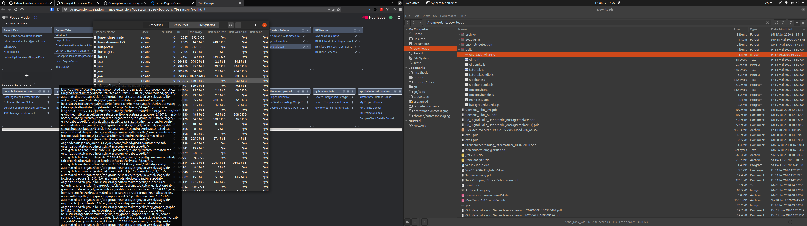

Heuristics Status: Already Running
If the heuristics fails with the code ALREADY_RUNNING, there might be an orphaned instance running
in the background. We only allow running one instance at a time (e.g., only having it enabled in
Firefox OR Chrome). To fix this issue, open a task or process manager and end the process related to
our heuristics backend (i.e., the respective JVM), then try enabling the heuristics again.
Linux (Ubuntu)
Open "System Monitor" and end the "java" process that is running in ~/bin/tabs/bin (the installation
directory).

Windows
Open Task Manager using X. Close the process called "Adopt..." by right-clicking and selecting "X".